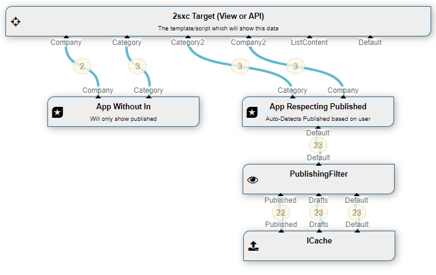

Class App
- Namespace
- ToSic.Eav.DataSources
- Assembly
- ToSic.Eav.DataSources.dll
All the data inside an App.
For example, it has a variable amount of Out-streams, one for each content-type in the app.
The App DataSource is part of the Standard EAV Data Sources. It provides all items of the current App or of another App if needed.
How to use with the VisualQuery
When using the VisualQuery you can just drag it into your query. In its initial state, the Default out stream will deliver all Entities of all Content-Types which you can then filter.
🔑 However, you can rename that or create more; the out-connections will automatically filter to the name of the matching content types, which looks like this:

There are three common use cases:
1. Using App With The Current App
You can either just use it without any In stream, then it will just deliver the published items. This is because without an In, the App will automatically build an In providing published only.
If you do provide any kind of in, it will use that as the source. So if you provide a Publishing-Source on the in, which will cause the App DataSource to differ the result based on the user who is looking at it. So editors would see unpublished as well:
2. Using App with Other App
The App-DataSource can also be configured to deliver data from another app. For this, to configure and set the ZoneId and AppId:

You can also deliver data from different Apps by using multiple App sources:

Programming With The App DataSource
We recommend to use the VisualQuery where possible, as it's easier to understand and is identical for C# and JavaScript. It's also better because it separates data-retrieval from visualization.
Important: to access data of the current App, please use the App.Data as it's a pre-build object with the same streams. For example, use App.Data["BlogPost"] to get all the BlogPost items.
An example code
@{
var blog = CreateSource<ToSic.Eav.DataSources.App>();
blog.ZoneSwitch = 2; // go to Zone 2
blog.AppSwitch = 403; // go to App 403
}
@foreach(var post in AsList(blog["BlogPost"]))
{
<div>@post.EntityTitle</div>
}
The previous example creates an App source to the zone 2, app 403 and retrieves all items of type BlogPost to show in a loop.
Important When Coding
Note that data sources only retrieve data once, and then ignore any further configuration. So you must set Zone/App before accessing the data.
Read also
Demo App and further links
You should find some examples in this demo App
History
- Introduced in EAV 3.x, in ca. 2sxc 6.x
API Documentation
[PublicApi]
[VisualQuery(NiceName = "App", UiHint = "All data in an app with streams for type", Icon = "table_chart", Type = DataSourceType.Source, NameId = "ToSic.Eav.DataSources.App, ToSic.Eav.DataSources", DynamicOut = true, In = new string[] { "Default" }, ConfigurationType = "|Config ToSic.Eav.DataSources.App", HelpLink = "https://go.2sxc.org/DsApp")]
public class App : DataSourceBase, IDataSource, IAppIdentity, IZoneIdentity, IAppIdentityLight, ICacheKey, ICacheExpiring, ITimestamped, IHasLog, IDataSourceLinkable- Inheritance
-
objectServiceBaseApp
- Implements
- Inherited Members
Properties
AppReader
protected IAppReader AppReader { get; }Property Value
- IAppReader
AppSwitch
Use this to re-target the app-source to another app.
Note that this can only be done before ever accessing the app - once the object has started reading data, switching has no more effect.
[Configuration(Fallback = 0)]
public int AppSwitch { get; set; }Property Value
Out
Gets the Dictionary of Out-Streams. This is the internal accessor, as usually you'll use this["name"] instead.
In rare cases you need the Out, for example to list the stream names in the data source.
public override IReadOnlyDictionary<string, IDataStream> Out { get; }Property Value
- IReadOnlyDictionary<string, IDataStream>
A dictionary of named IDataStream objects, case insensitive
ZoneSwitch
Use this to re-target the app-source to another zone.
Note that this can only be done before ever accessing the app - once the object has started reading data, switching has no more effect.
[Configuration(Fallback = 0)]
public int ZoneSwitch { get; set; }